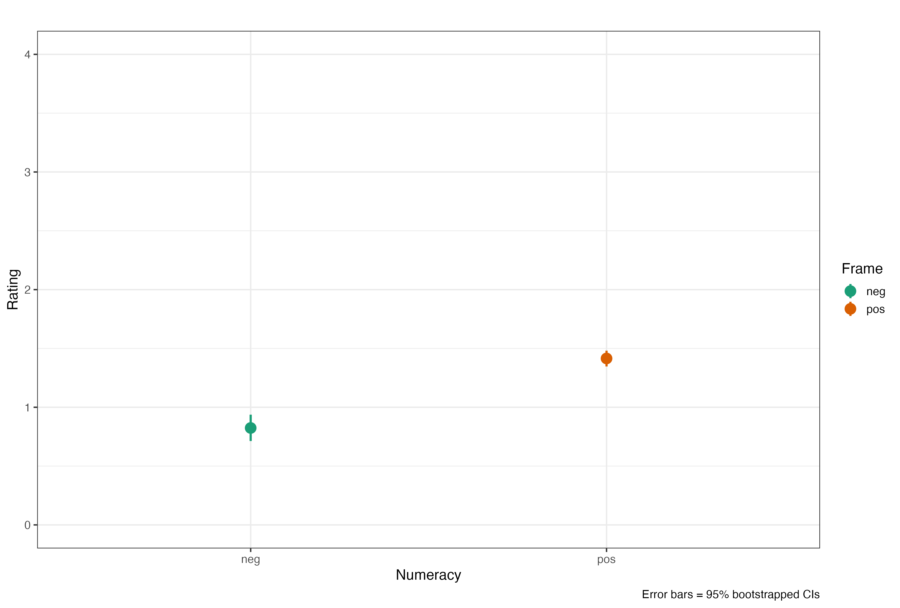
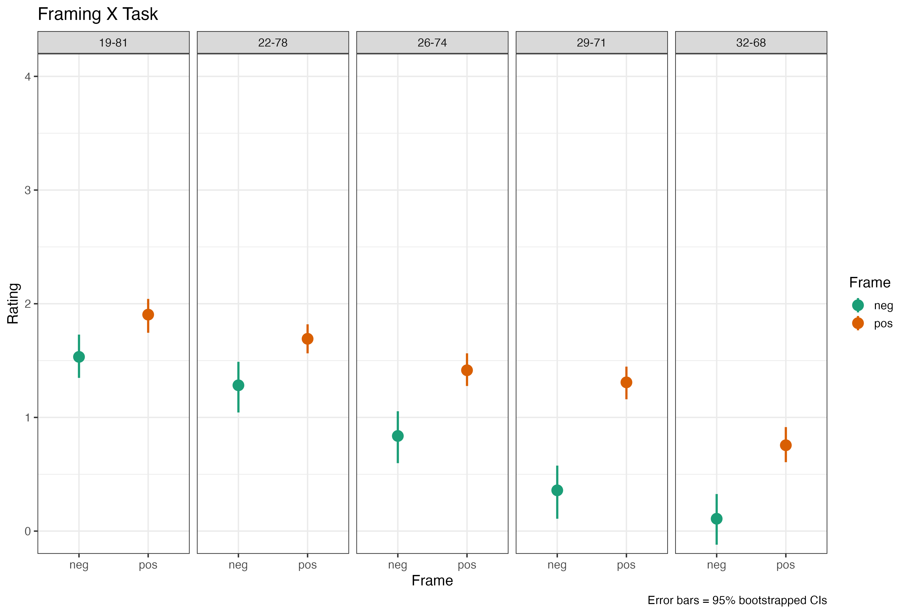
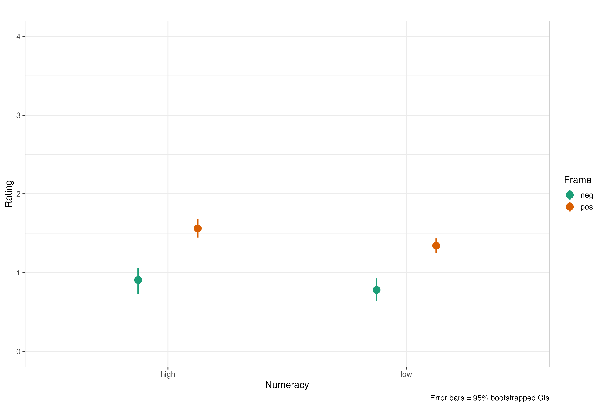

| Frequency | |
|---|---|
| high | 63 |
| low | 123 |
Abstract
A series of four studies explored how the ability to comprehend and transform probability numbers relates to performance on judgment and decision tasks. On the surface, the tasks in the four studies appear to be widely different; at a conceptual level, however, they all involve processing numbers and the potential to show an influence of affect. Findings were consistent with highly numerate individuals being more likely to retrieve and use appropriate numerical principles, thus making themselves less susceptible to framing effects, compared with less numerate individuals. In addition, the highly numerate tended to draw different (generally stronger or more precise) affective meaning from numbers and numerical comparisons, and their affective responses were more precise. Although generally helpful, this tendency may sometimes lead to worse decisions. The less numerate were influenced more by competing, irrelevant affective considerations. Analyses showed that the effect of numeracy was not due to general intelligence. Numerical ability appears to matter to judgments and decisions in important ways.
Team Bachelor Spring 2022
- Julia Beglinger
- Aline Buehler
- Anna Crescenza
- Jessica von Fransecky
- David Gauss
- Joelle Haas
- Marc Liechti
- Monica Loi
- Robin Thuerig
- Jana Tschopp
Original work
Peters, E., Västfjäll, D., Slovic, P., Mertz, C. K., Mazzocco, K., & Dickert, S. (2006). Numeracy and decision making. Psychological Science, 17(5), 407-413. DOI
Replication
Numeracy is the ability to solve numeric problems - it has been shown to interact with many decision making tasks, mostly following the formula: the more numeracy the less bias you find in people.
Demographics
How are high and low numerates distributed? We use the German Berlin Numeracy Scale (BNT, Cockely et al., 2012) to measure numeracy with 4 questions. Splitting this score with <=2 for low and >2 for high numerates gives us the following distribution:
It does, of course, make sense to look at the general distribution of correct answers in the sample, too. The modus of 1 correct answer is somewhat surprising, given that our sample could be considered as well educated.

Framing
So, lets get started with some framing tasks … we use the same paradigm as Peters et al. (2006) in that we let a participants judge a Psych student’s test score either in a positive or negative frame. An example for a positive frame was Emily got 74% of her test correct the connected negative version was: Emily got 26% of her test incorrect. We then varied the percentage correct [81, 78, 74, 71, 68] and incorrect and the names of students [Emily, Fabian, Anna, Luca, Laura] in a between subjects design, where participants were either subjected to the positive or negative framing condition.
Averaging these ratings we find a somewhat small but, as we will see, significant difference between positive and negative framing.

Lets do a simple ANOVA and compare these means for Numeracy [high|low] x Framing [pos|neg].
Df Sum Sq Mean Sq F value Pr(>F)
frame 1 81 81.2 76.8 <2e-16 ***
Residuals 928 981 1.1
---
Signif. codes: 0 '***' 0.001 '**' 0.01 '*' 0.05 '.' 0.1 ' ' 1Alright, framing effect ✓ with a mean rating of M = 0.82 (SD = 1.21) for ‘negative’ and M = 1.41 (SD = 0.82) for ‘positive’ - not a total disaster … which can be confirmed by calculation of Cohen’s d = 0.57.
Some checking
Before we get going into the details, I will do some checking whether the tasks worked. In what follows I split the data for positive and negative frame from Fig. 2 into the 5 task variations we used. Remember that these have decreasing distance between the positive and negative framing condition - the positive percentages correct are: [81, 78, 74, 71, 68]. The first number in the column headings represent the negative frame, the second the positive, hence the first column is the 19% negative v. 81% positive condition and so on. Participants react to these differences with decreasing general ratings when the negative result increases. Pretty good!

The Framing effect is small in the 19-81 condition and increases with increasing negative and connected decreasing positive percentage. I am using the map() function to run an Anova for each task_id - which will give us 5 Anovas with 2 lines each in the results tibble - here is the code that does that - a simple t-test would do the same, but could not figure out how to map that …
framing %>%
nest(data = -task_id) %>%
mutate(model = map(data, ~ anova(lm(rating ~ frame, .)))) %>%
select(task_id, model) %>%
unnest(model)# A tibble: 10 × 6
task_id Df `Sum Sq` `Mean Sq` `F value` `Pr(>F)`
<dbl> <int> <dbl> <dbl> <dbl> <dbl>
1 1 1 15.5 15.5 17.7 4.02e- 5
2 1 184 161. 0.877 NA NA
3 2 1 6.42 6.42 8.38 4.26e- 3
4 2 184 141. 0.767 NA NA
5 3 1 41.9 41.9 48.5 5.72e-11
6 3 184 159. 0.865 NA NA
7 4 1 7.77 7.77 9.62 2.23e- 3
8 4 184 149. 0.808 NA NA
9 5 1 19.4 19.4 21.5 6.66e- 6
10 5 184 166. 0.904 NA NA Pretty neat - and confirming what we suspected above - significant framing effect for each task and difference between results for the rated student.
The Interaction
Of course, what we ultimately after is the interaction between framing and numeracy - remember, people high in numeric ability are less susceptible to framing - in theory …
Lets first plot the interaction graph between framing x numeracy:

Hmmmm - we clearly see a difference between positive and negative frame, knew that already, but the difference between the numeracy groups seems small …
I will run something a bit more complex - a multi level model where I use frame and numeracy (score) as predictors. I also add a random intercept for participants (ID) and nest task_id into that.
framing_model <- lmer(rating ~ frame * score + (1|task_id) + (1|ID), data = framing)
summary(framing_model) Linear mixed model fit by REML ['lmerMod']
Formula: rating ~ frame * score + (1 | task_id) + (1 | ID)
Data: framing
REML criterion at convergence: 1928
Scaled residuals:
Min 1Q Median 3Q Max
-7.729 -0.495 0.001 0.519 4.451
Random effects:
Groups Name Variance Std.Dev.
ID (Intercept) 0.571 0.756
task_id (Intercept) 0.260 0.510
Residual 0.277 0.527
Number of obs: 930, groups: ID, 186; task_id, 5
Fixed effects:
Estimate Std. Error t value
(Intercept) 0.664587 0.270993 2.45
framepos 0.602860 0.200104 3.01
score 0.082348 0.062650 1.31
framepos:score -0.000819 0.086923 -0.01
Correlation of Fixed Effects:
(Intr) framps score
framepos -0.397
score -0.447 0.606
frameps:scr 0.322 -0.814 -0.721Immediately we run into the problem that the output, in principle, has all the necessary information but it would be great to have this as a bit nicer overview - here the sjPlot package is super useful - it has a function called tab_model() that takes the output of lmer() as an input and provides well formatted html-ouput:
tab_model(framing_model,
show.df = TRUE,
show.stat = TRUE)| rating | |||||
|---|---|---|---|---|---|
| Predictors | Estimates | CI | Statistic | p | df |
| (Intercept) | 0.66 | 0.13 – 1.20 | 2.45 | 0.014 | 923.00 |
| frame [pos] | 0.60 | 0.21 – 1.00 | 3.01 | 0.003 | 923.00 |
| score | 0.08 | -0.04 – 0.21 | 1.31 | 0.189 | 923.00 |
| frame [pos] × score | -0.00 | -0.17 – 0.17 | -0.01 | 0.992 | 923.00 |
| Random Effects | |||||
| σ2 | 0.28 | ||||
| τ00 ID | 0.57 | ||||
| τ00 task_id | 0.26 | ||||
| ICC | 0.75 | ||||
| N task_id | 5 | ||||
| N ID | 186 | ||||
| Observations | 930 | ||||
| Marginal R2 / Conditional R2 | 0.082 / 0.770 | ||||
While, as expected, framing results in a significant effect neither score (which referes to numeracy in its continuous form) nor the interaction between framing x score results in a significant effect, hence somewhat failed?!
References
Cokely, E. T., Galesic, M., Schulz, E., Ghazal, S., & Garcia-Retamero, R. (2012). Measuring risk literacy: The Berlin Numeracy Test. Judgment and Decision Making, 7(1), 25–47. DOI
Peters, E., Västfjäll, D., Slovic, P., Mertz, C. K., Mazzocco, K., & Dickert, S. (2006). Numeracy and decision making. Psychological Science, 17(5), 407-413. DOI